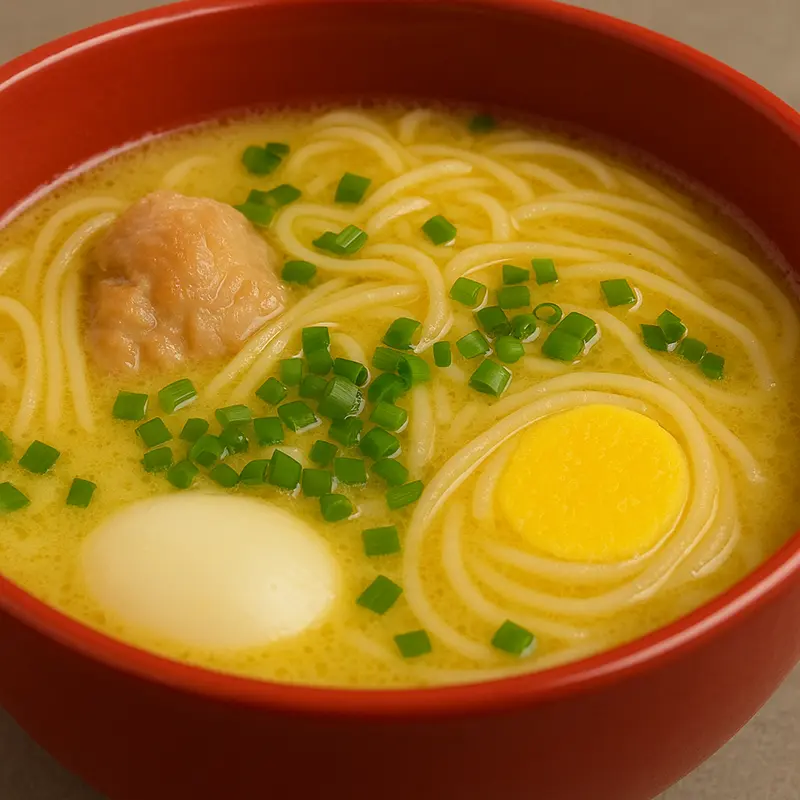

Caldo de Gallina

Descripción
El caldo de gallina es una institución de la gastronomía peruana; al mismo nivel del ceviche, el chifa y el pollo a la brasa.
Es un plato eminentemente popular, con fama de poder reponer no solo los males del cuerpo, sino también del alma.
Ingredientes
- 1 gallina cortada en presas
- 3 litros de agua
- 1 trozo de kion pelado y chancado
- 2 ramos de apio
- 4 papas amarillas peladas
- 4 huevos sancochados
- 1 rama cebolla china picada
- Sal al gusto
- Limón cancha serrana y aji para acompañar
Instrucciones
- Colocar las presas de gallina en una olla grande con los 3 litros de agua, el kion, el apio y sal al gusto.
- Dejar hervir a fuego medio durante aproximadamente 1 hora y media hasta que la carne esté tierna.
- Retirar el apio y el kion del caldo
- Agregar las papas amarillas enteras y cocinar por unos 15 minutos, cuidando que no se deshagan por completo.
- Añadir los fideos y dejar hervir por 8 a 10 minutos más hasta que estén al dente.
- Servir el caldo caliente en platos hondos con una presa, una papa amarilla, fideos y un huevo sancochado.
- Decorar con cebolla china picada y acompañar con limón, cancha serrana y ají.